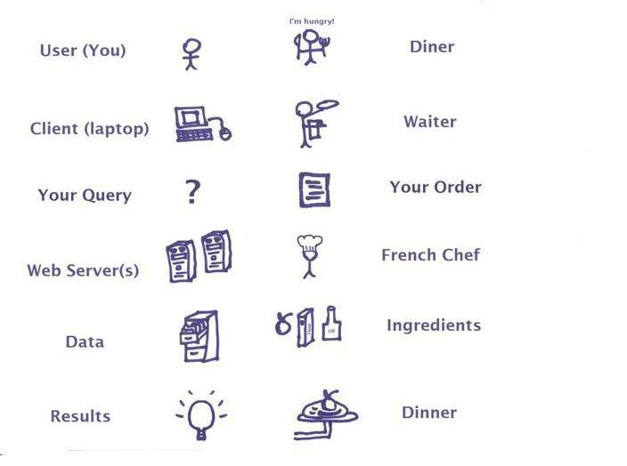
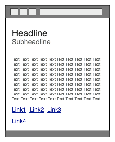

Introduction to Web Development #1 - How you should REALLY get started
How is the web like dining at a French restaurant? The difference between design and structure. What languages are "spoken" on the web? How REAL web developers learn to code.
All of these topics are covered in this first installment of my Introduction to Web Development series.
The dining experience
The internet has, somewhat imprecisely, been described as a "series of tubes".
Instead of trying to teach you all the details of its inner workings, I'm going to focus on the one concept you need to understand right away: the client-server model.
Or, as I like to call it, the Dining Experience.
- You (the user) are the diner in a lovely French restaurant.
- Your personal computer (the client) acts as the waiter, which gives you a menu of choices
- and then translates your order (query) into French.
- The web server (another computer on the world wide web) is the French chef, who receives your translated order from the waiter (client).
- The chef then uses the ingredients (data) at hand
- to cook up your dinner (results of your query), which the waiter (client) then returns to you (diner/user).
{kind=link}
Languages spoken on the web
As you can tell from the dining metaphor, the web is about communication and data. And, just like when people talk, computers need languages to communicate.
There are two types of scripting languages: client-side and server-side.
Client-side Languages
- Definition: processed or translated by your client (personal computer, laptop, mobile device), these languages depend on the resources (memory, etc.) that your computer and your web browser have.
- Examples: HTML, CSS, and JavaScript.
- Advantage: you can provide interactive elements (rollover buttons, form validation, tracking cookies) without having to reload the page since you don't need to consult the server.
- Disadvantages:
- Out-of-date browsers can mistranslate your instructions;
- it can slow down old or under-resourced computers;
- the code is visible and, so, is not secure.
Server-side Languages
- Definition: processed or translated by the web server, before they even get to your computer, these languages don't depend on the web browser or your computer, but on the resources (memory, etc.) that the server has.
- Examples: A popular language in the open source community is PHP. My favorite bits of server-side code for Apache web servers are server-side includes (SSI). SSI's allow you to edit your web site's header (or footer, or navigation) in one place, but have it change everywhere.
- Advantages:
- Nobody sees your code, so it's more secure;
- it runs on the server, so it doesn't depend on the processing power of the client device;
- you can include external files (like SSIs) to cut down on coding every page;
- it can be combined with database programs on the server to create really powerful web applications (like drupal).
- Disadvantages:
- not interactive, pages have to be reloaded to change behavior
- depends on which types of settings your server has turned on (for instance, SSIs aren't turned on by default for all web servers);
Further explanation
Client-side and server-side languages are processed in different locations and, so, cannot interact with one another directly. For example, you can't write JavaScript that calls a PHP file.
While it is important to understand the difference between client-side and server-side languages, this series of lessons is going to focus on only 2 of the client-side languages: HTML and CSS.
Structure vs. Visual design
HTML and CSS represent the core of most web pages. Thus, you cannot be a web developer unless you are familiar with both.
In addition, HTML and CSS highlight an important distinction between the visual design (CSS) and the organizing structure (HTML) of a web page.
Meaningful structure (HTML)
The purpose of HTML is to give data some structure.

An <h1/> tag for instance, tells the web browser that the text contained between them is a heading of the first importance.
An <img/> tag, on the other hand, tells the browser that it surrounds an image.
And a <p/> tag indicates the beginning and ending of a paragraph.
This matters because, otherwise, you have lots and lots of text without any structure or meaning.
And, like people, web browsers need to understand the context before they can interpret the words correctly.
Visual design (CSS)
There's more to the web than just structure, though. There are also designs: like the beautiful web page you are currently viewing <wink>.
 CSS allows you to control spacing, colors, background images, and more.
CSS allows you to control spacing, colors, background images, and more.
If you want to be a quality web developer: do ALL of your design work in CSS. Don't use old hacks that force HTML to do design, too.
We'll talk more about CSS in a future lesson. For now, just remember: HTML is for structure, and CSS is for visual design.
How real web developers learn
We steal.
I meant to say: we borrow! Taking a peak at and imitating other people's code is how most of us started doing web development. You can find the web page's source code in different locations in various web browsers:
- The Mozilla Firefox web browser is one of the best for developing web sites, because of its useful extensions. Choose View > Page Source and you will suddenly have a world of other people's code opened up to you.
- In Internet Explorer 8 for Windows, choose Tools > Developer Tools.
- In Safari for Macs, choose View > View Source.
A few well-designed websites whose code you might take a peek at are:
My next lesson in this series will talk all about the various dialects of the great and powerful HTML language.
For more information
- Common Craft. (2009). World Wide Web in Plain English. (Clever and clear VIDEO about what makes the WWW work).
- Brain, Marshall. How web servers work. Howstuffworks, Inc. a Discovery company. (AWESOME article, with Harvard extension videos that are also great).
- Strickland, Jonathan. How does the internet work? Howstuffworks, Inc. a Discovery company.
- Toothman, Jessika. What's the difference between the internet and the world wide web? Howstuffworks, Inc. a Discovery company.
- Tyson, Jeff. How internet infrastructure works. Howstuffworks, Inc. a Discovery company.